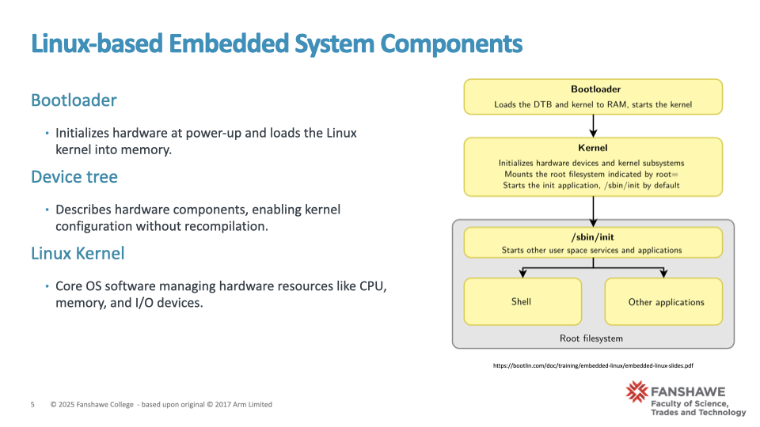
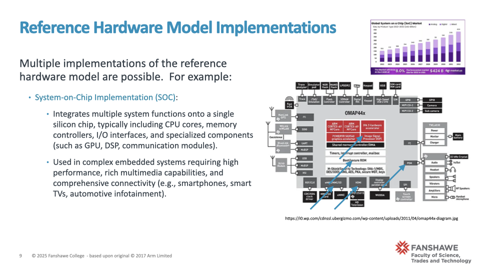

3 Linux-based Embedded System
3.1 Slides: Linux-based Embedded System Components
Narrative: “As we saw previously, embedded Linux systems rely on a structured set of core components. The Bootloader ensures hardware readiness at startup, preparing the system for the Linux Kernel, which manages critical resources. The kernel leverages a Device Tree for flexible hardware configuration without constant recompilation. System programs make interactions user-friendly, providing an accessible interface to system capabilities. Your actual application software defines the ultimate purpose of your embedded device, such as controlling industrial machinery or managing multimedia content. Finally, all this software and configuration data reside within a carefully structured Root Filesystem, ensuring that the system remains organized and operational.”

Components 1 of 2 Bootloader: At power-up, the bootloader prepares the hardware and facilitates the transition to the operating system. It initializes system resources and provides essential startup information to the Linux kernel.
Device Tree: This is a data structure that describes hardware components, allowing the kernel to configure and manage device drivers without needing hardware definitions to be hard-coded. The device tree is crucial for flexibility, enabling easier updates to hardware configurations.
Linux Kernel: The kernel is the heart of the embedded system, managing resources such as CPU, memory, processes, and I/O interactions. It provides a robust and versatile foundation, supporting various hardware architectures and extensive functionalities.

Components 2 of 2 System Programs: These include user-friendly utilities and services that facilitate interaction with the system hardware and kernel, simplifying development and maintenance.
Application: This refers to the user-specific software that delivers the embedded system’s core functionality, tailored to the product’s end-use.
Root Filesystem: The root filesystem stores the Linux kernel configuration, essential system programs, application software, and user-space utilities. It defines the operational environment and can be configured for persistent storage or temporary, RAM-based storage depending on system requirements.” Transition Statement:“Understanding these foundational components is vital for comprehending how Linux is structured within an embedded context. As we move forward, we’ll examine each component individually to appreciate their roles and interactions in greater detail.”
Suggested Resources:
- “Embedded Linux Primer” by Christopher Hallinan: ◦ Chapters detailing bootloader roles, device trees, and kernel fundamentals.
- Linux Kernel Documentation: ◦ Comprehensive explanations of the kernel architecture and subsystems (https:// www.kernel.org/doc/html/latest/).
- Device Tree Documentation: ◦ In-depth usage guidelines for DTS and DTB formats (https://devicetree.org/).
- Bootloader examples: ◦ Practical examples using U-Boot for embedded Linux devices (https:// www.denx.de/wiki/U-Boot).
- Embedded Linux Introduction
- https://community.intel.com/t5/Blogs/Products-and-Solutions/Software/Loading-and-Starting-a- Linux-Kernel-in-Five-Different-Ways/post/1571900
3.2 Slide: Hardware Reference Model
Narrative: “Embedded systems consist of hardware components carefully selected to meet specific performance and functionality goals. The CPU is the central component that executes instructions, controlling system operations. RAM memory provides fast, volatile storage for running software, crucial during system operation but cleared once power is lost. I/O peripherals allow the embedded system to interact with users and external environments through inputs (like sensors or buttons) and outputs (such as actuators or screens). The Boot Flash memory stores initial boot software that prepares hardware upon startup. Finally, the Mass Storage Flash holds the main operating system, applications, and any data requiring persistent storage.”
Helpful Resources for Further Development:
“Embedded Systems with ARM Cortex-M Microcontrollers in Assembly Language and C” by Yifeng Zhu (clear diagrams and foundational explanations of hardware components).
“Designing Embedded Hardware” by John Catsoulis (useful diagrams and practical descriptions of hardware components).
3.3 Slide: Hardware Reference Implementations
Narrative:
“In embedded systems, hardware implementations generally fall into two main categories:
Microcontroller-based implementations (MCU) typically integrate most system components— such as the CPU, small amounts of RAM and Flash memory, and basic I/O peripherals— within a single chip. These systems offer simplicity, cost-effectiveness, and lower power consumption, making them suitable for simpler embedded applications like automotive sensors, home appliances, and simple control systems.
Embedded System Hardware Reference System-on-Chip (SoC) implementations, on the other hand, integrate a broader range of advanced system components—including CPU cores, memory controllers, graphical processors (GPU), digital signal processors (DSP), advanced I/O peripherals, and even networking interfaces—onto a single silicon chip. This high degree of integration significantly reduces complexity, lowers power usage, and improves performance. SoCs are ideal for more complex embedded applications demanding robust processing, multimedia capabilities, extensive connectivity, or specialized tasks—examples include smartphones, tablets, smart TVs, automotive infotainment systems, and network routers. Understanding these distinctions helps engineers select appropriate hardware platforms based on application requirements, performance goals, cost constraints, and power budgets.” 
3.4 Slide: Bootloader - Key Responsibilities
- Narrative: “At startup, a system’s processor cannot immediately run applications or even the operating system directly. Instead, it relies on a special software called the bootloader to initialize the hardware, prepare memory, and set up basic processor configurations. Specifically, the bootloader locates the kernel software, ensures it’s properly loaded into memory, and creates an environment suitable for the operating system to take control. In essence, the bootloader bridges the gap between hardware startup and operating system execution.”
- Supporting Resources for Further Exploration:
- U-Boot documentation (practical bootloader reference): U-Boot Project
- Bootlin Embedded Linux Training (Bootloader section): Bootloader Training PDF
3.5 Slide: Understanding the Program Counter (PC)
Narrative:
- “Before diving deeper into system startup, let’s clarify the role of a critical CPU register called the Program Counter, or PC. The PC is essentially the CPU’s internal pointer, always indicating the memory address of the next instruction to execute.
- With each executed instruction, the CPU automatically updates the PC to point sequentially to the next instruction. At power-up or after a reset, the PC doesn’t point randomly; instead, it’s set to a specific, known address— called the Reset Vector.
- Understanding the role of the Program Counter is essential because it directly influences how software execution flows within a CPU.”
3.6 Slide: Processor Startup and the Reset Vector
Narrative:
“Now that we understand the Program Counter, we can clearly see why the Reset Vector is essential.
At startup, the CPU automatically sets the PC to this Reset Vector— directing it to execute a small piece of initial software, typically part of the bootloader.
This startup code provides critical configuration details, such as where the main software is located, how to access it, and how to configure essential memory structures like the stack.
Although the specifics may differ between systems, this foundational sequence is consistent across virtually all embedded processors.”
Additional Resources for Narrative Development:
Computer Organization and Design (RISC-V Edition) by Patterson and Hennessy, provides clear foundational explanations about program counters and CPU instruction execution flow.
Embedded System Design by Frank Vahid and Tony Givargis, detailing startup sequences and reset vectors clearly.
3.7 Slide: Scenario 1, typical of microcontrollers
Narrative:
“In embedded Linux systems, the exact startup scenario varies depending on hardware architecture.
In a microcontroller (MCU) system, all necessary software—including bootloader, operating system, and applications—typically resides in internal flash memory.
The software executes directly from this embedded storage, simplifying hardware design.
Embedded RAM serves only as temporary storage for active data, stack, and heap.”
3.8 Slide: Scenario 2, Typical of a more complex System-on-Chip hardware
Narrative:
- Conversely, System-on-Chip (SoC) systems often separate boot flash memory, which holds only the initial bootloader and reset vector, from a larger, external mass storage containing the full operating system, applications, and filesystem.
- At startup, the bootloader loads the operating system and applications into external RAM, where they execute.
- This scenario allows greater flexibility and scalability for complex embedded applications, but involves more intricate hardware design.”
Useful Resources for Further Reference:
Bootlin Embedded Linux Training (Architecture): Bootlin Architecture Slides
“Embedded Linux Primer” by Christopher Hallinan: Excellent details on these boot scenarios and hardware differences.
3.9 Slide: Bootloader Operations: Initial Conditions (Before Power-up)
Narrative: - “Before the embedded device powers up, its bootloader and reset vector are stored in boot flash memory, and the operating system and applications reside in mass storage flash. - RAM memory, being volatile, is initially empty and uninitialized.”
3.10 Slide: Bootloader Operations: CPU Reset Vector at Power-up
Narrative:
- “At power-up, the CPU loads the reset vector into its Program Counter, directing it to execute the bootloader’s first instruction. This marks the start of the bootstrap process.”
3.11 Slide: Bootloader Operations: During Bootstrap
Narrative: - “During bootstrap, the bootloader configures essential hardware resources, initializes RAM, and transfers operating system and other software components from persistent storage into RAM, preparing them for execution.”
3.12 Slide: Bootloader Operations: Transition to Operating System
Narrative:
“At the end of the bootstrap process, the bootloader transfers control to the operating system, effectively stepping aside as the OS takes responsibility for managing the system’s resources and starting user applications.”
Supporting Resources for Further Narrative Development:
- Bootlin Training: Embedded Linux Boot Sequence (Bootlin Slides Bootlin Slides)
- Embedded Linux Primer by Christopher Hallinan: Detailed yet clear explanations of each step in the bootloader sequence.
3.13 Slide: Role of the Linux Kernel in Embedded Systems
Narrative:
“The Linux kernel is the core software component within embedded Linux systems, responsible for managing hardware resources efficiently and reliably.
It ensures that multiple applications or processes can run smoothly by handling process creation, scheduling, and management. It also manages memory allocation and protection, ensuring programs don’t interfere with each other or the system itself.
Device drivers within the kernel handle input and output with external devices—such as sensors or actuators.
Moreover, the kernel provides critical support for organizing data through file systems, facilitates communication across networks, and allows processes to share information through inter-process communication.
In essence, the kernel acts as the critical link between software applications and hardware.”
Supporting Resources for Further Narrative Development:
- “Linux Kernel Development” by Robert Love: Clear explanations and diagrams about kernel responsibilities.
- Kernel documentation (kernel.org): Kernel Documentation (Official resource with detailed explanations).
3.14 Slide: Linux Kernel: Layered Operating System Structure
Narrative
“In Linux, the operating system is designed using a two-layer approach: kernel space and user space. Think of kernel space as the area of the operating system that directly manages your hardware—controlling memory, running processes, and handling all hardware interactions. User space, on the other hand, is where your applications and programs run. To maintain system stability, these applications don’t directly access hardware; instead, they ask the kernel to perform tasks on their behalf.
The Linux kernel is described as a monolithic kernel, meaning it bundles all core functions into a single, large executable. This design makes the kernel very efficient but also means that a serious error in one kernel function can potentially impact the entire system.
To improve flexibility and reduce this risk, Linux supports loadable kernel modules, small pieces of software you can add or remove while the system is running. These modules commonly provide new features such as additional device drivers, network support, or file system enhancements.”
Resource: embedded-linux-design-kernel-analysis
3.15 Slide: Monolithic Kernel: Advantages and Disadvantages
Narrative
“The monolithic design of the Linux kernel offers significant advantages, primarily through its strong separation between the user applications and kernel-level processes. Because of this separation, errors in user applications typically do not affect the stability or security of the kernel itself—ensuring system reliability.
However, the same tightly integrated nature also introduces a notable disadvantage: a bug or error within any part of the kernel, such as a newly installed device driver or network component, can potentially destabilize or crash the entire operating system. This risk necessitates meticulous design, rigorous testing, and careful management of kernel-level software changes.”
Additional Resources for Further Reading:
“Understanding the Linux Kernel” by Daniel P. Bovet and Marco Cesati for in-depth exploration of monolithic kernels.
“Linux Kernel Development” by Robert Love (excellent for clear explanations of kernel architecture implications).
3.16 Slide: Device Tree: Flexible Hardware Descriptions for the Kernel
Narrative
“The Linux kernel needs to understand the system’s hardware to load the correct drivers and manage resources. While one approach would be to hardcode this hardware information directly into the kernel source code, that method becomes cumbersome and time-consuming if the hardware changes, as it requires kernel recompilation.
The more flexible and modern approach is to use a device tree. This involves describing the hardware in a Device Tree Source (DTS) file, which is then compiled into a binary Device Tree Blob (DTB). The bootloader passes this DTB to the kernel at startup, allowing the kernel to dynamically understand the hardware setup. This method makes it easy to update or support new hardware without rebuilding the kernel — simply modify the DTS and recompile.”
Helpful Resource:
• Linux Kernel Device Tree documentation: https://www.kernel.org/doc/html/latest/devicetree/usage-model.html
3.17 Slide: System Programs: Tools Built on Kernel Services
Narrative
“System programs are the essential tools that sit between user applications and the kernel, providing convenient interfaces for both development and system management. These programs rely on kernel services but make interacting with them much more user-friendly.
For instance, system programs include utilities that show status information about the system, such as top or uptime. They also offer file modification tools, like text editors and file manipulation commands. Developers benefit from programming support tools like compilers and language interpreters.
Furthermore, system programs help with program loading and execution, using tools like shells (bash) or service managers (systemd). For networking and communication, utilities like ping and ssh allow interaction with remote systems. Finally, many lightweight applications, like curl or tools included in BusyBox, help perform everyday tasks in embedded systems.”
Resources
Resource for Reference:
•BusyBox website (a great real-world example of system programs in embedded Linux):
• “Linux Command Line and Shell Scripting Bible” by Richard Blum — can help build student familiarity with system programs.
3.18 Slide: Application Layer

Narrative
“At the top of the software stack sits the application layer, which is where the embedded system’s purpose comes to life. Whether the device is a home router, a smart thermostat, or a piece of lab equipment, the application software is what users interact with. It relies on system programs and kernel services to access hardware and perform tasks.
For example, in a Network Attached Storage (NAS) device, the application manages file sharing and disk operations. In an automotive system, the infotainment application handles touch input, navigation, and media playback. Applications can be custom-built for unique products or adapted from open-source solutions, and they define what the system actually does for the end user.”
Resources
• Case studies on open-source automotive Linux (Automotive Grade Linux):https://www.automotivelinux.org/
• Yocto Project and embedded applications examples:https://www.yoctoproject.org/
3.19 Slide: Root Filesystem: The Foundation of User Space
Narrative “Once the kernel has completed its initial setup, it needs a structured environment where system programs and applications can run. This is the role of the root filesystem — it contains configuration files, system utilities, libraries, and applications that define the system’s user-space environment.
At startup, the kernel looks for a file called init, which becomes the first user-space process, kicking off system initialization and launching essential services.
Depending on the system, the root filesystem can reside entirely in RAM, especially in development setups where no persistent storage is needed. For production devices, it typically resides in persistent storage like flash memory. In some development workflows or specialized systems, the root filesystem may be loaded over the network, allowing rapid iteration and debugging without flashing the device repeatedly.”
3.20 Slide: Root File System Illustrated

Narrative
*“Now that we’ve discussed what the root filesystem is and why it’s critical, let’s take a visual tour of its structure.
At the top level, we have the root directory, represented by a single slash /. Underneath it, the filesystem is organized into directories, each serving a specific role.
First, /bin contains essential user command binaries — these are the core utilities, like cp, ls, and bash, that are needed even if no other software is available.
Next, /etc holds configuration files for the system — think of network settings, hostnames, and startup scripts.
/sbin is where we find essential system binaries that administrators use for critical tasks like partitioning disks or configuring the network.
The /usr directory holds application support data, libraries, and binaries for user applications, while /var stores variable data files such as logs, cache files, and print spools that change as the system runs.
We also have special directories: • /dev contains device files that represent hardware. • /home is where user files reside. • /lib holds shared libraries and kernel modules. • /proc is a virtual filesystem that represents kernel and process information in real time. • /root is the root user’s home directory.
Finally, directories like /mnt and /opt are for mounting temporary filesystems and installing optional applications.
This structure is universal across Linux systems — including embedded Linux — and understanding it is essential for managing, troubleshooting, and customizing your devices. In future labs, we’ll navigate these directories to explore and modify real embedded Linux systems.”*
3.21 Review for Module 02
Multiple Choice
- What is the primary role of a bootloader in an embedded Linux system?
A) To run user applications
B) To initialize hardware and load the operating system
C) To manage file systems
D) To schedule kernel processes
- In an embedded SoC system, where is the operating system typically stored before being loaded into RAM?
A) CPU registers
B) Boot flash memory
C) Mass storage flash
D) RAM
- Which component describes hardware to the Linux kernel in a flexible and updatable way?
A) Kernel module
B) Device tree blob (DTB)
C) System call interface
D) Init process
- Which one of the following is NOT typically found in the root filesystem?
A) Kernel binary
B) Configuration files in /etc
C) System utilities in /bin
D) The init process
- What advantage does a monolithic kernel provide?
A) Complete separation of hardware and software
B) The ability to dynamically load user applications
C) Efficient execution by integrating all core functionalities
D) Guaranteed system stability in case of kernel bugs
Fill in the Blank
- The first user-space process launched by the Linux kernel during boot is called ________.
- A ________ file is compiled from a Device Tree Source (DTS) file and passed to the kernel at boot.
- The ________ filesystem stores essential binaries, configuration files, and user-space applications the kernel relies on after boot.
Short Answer
- Briefly explain the role of the Program Counter (PC) at system power-up and how it relates to the reset vector.
- List two key differences between a microcontroller-based embedded implementation and a system-on-chip (SoC)-based implementation.
- Describe one advantage and one disadvantage of using a monolithic kernel in an embedded system.
3.22 Answer Key for Module 02 Review Questions
Multiple Choice:
1. B) To initialize hardware and load the operating system
2. C) Mass storage flash
3. B) Device tree blob (DTB)
4. A) Kernel binary
5. C) Efficient execution by integrating all core functionalities
Fill in the Blank:
6. init
7. Device tree blob (DTB)
8. root
Short Answer:
9. The Program Counter (PC) is set to the reset vector address at power-up. It tells the CPU where
to begin executing instructions, starting the bootloader process.
10. - MCU has integrated CPU, RAM, and flash memory on a single chip; SoC integrates CPU and
peripherals but often uses external RAM and storage.
- MCUs are used for simpler systems; SoCs support more complex, higher-performance
applications.
11. Advantage: High efficiency due to integrated functionality. Disadvantage: A bug in a kernel
component can crash the whole system.